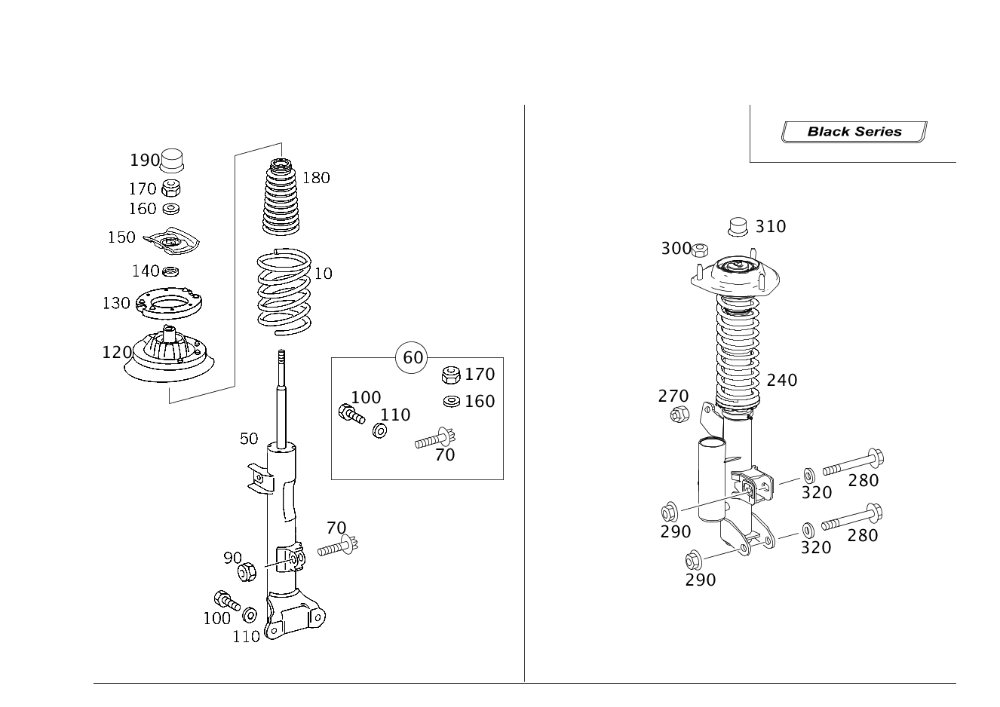

| № | Артикул | Название | Кол. | Примечание | Ограничение |
|---|---|---|---|---|---|
| 10 | A 203 321 38 04 | Упр.элемент подвески пер. (FRONT AXLE SPRING) | 2 | ЦВЕТНАЯ МАРКИРОВКА: 1 X КРАСНАЯ [T031] TO DETERMINE THE FRONT SPRINGS, THE POINTS IN THE TABLE BELOW FOR EACH RESPECTIVE MODEL AND THE SPECIAL VERSIONS INSTALLED ARE TO BE ADDED UP ============================================================================================================================== MODEL POINTS TOTAL CODE SPECIALEQUIPMENT POINTS TOTAL 209.308 214 228 AUX....HEATER 1 209.316 217 209.320 225 352 COMAND 1 209.341 202 209.342 202 353 AUTOPILOT SYS.. 1 209.343 202 209.354 214 414 SLIDING ROOF 2 209.356 214 209.361 202 423 AUTO.... 5-SP. TRANS.... 4 209.365 208 209.372 225 423+209.365/ AUTOMAT. 5-SPEED TRANS.. 2 209.375 218 308/465 209.376 221 424 SEQUENTRONIC (KSG) 1 209.377 235 427 7 GANG 209.320 / 209.354 / 4 209.420 / 209.454 209.420 235 427 7-SP.. 209.356 / 456 3 209.441 210 209.442 210 474 PART...FILTER..209.320/308/420 1 209.454 217 209.456 219 481 UNDERSHIELDS 4 209.461 210 209.465 215 612/617 XENON 1 209.472 232 209.475 226 614/618 BI-XENON 1 209.476 228 209.477 238 673 BATTERYWITH LARGE CAP..... 1 772 AMG-OPTIK-PAKET 1 810 SOUND S YSTEM 1 875 SCHEINW.-REINIGUNGSANLAGE 1 ============================================================== ============================================================== FRONT SPRING TABLE ============================================================================================================================== POINTS TOTAL FRONT SPRINGS STANDARD SUSPEN.. STANDARD SUSPEN. CABRIO. NOT. 209.476 / 477 COUPE NOT.. 209.376 / 377 -194 203 321 38 04 -185 203 321 38 04 195-203 203 321 39 04 186-194 203 321 39 04 204-212 203 321 40 04 195-204 203 361 40 04 213-222 203 321 41 04 204-213 203 321 41 04 223-233 203 321 42 04 214-224 203 321 42 04 234-244 203 321 43 04 225-235 203 321 43 04 245- 203 321 44 04 236- 203 321 44 04 SPORT SUSP... 486 / SPORT SUSP... 486 AND USA 494 * CABRIO COUPE -194 203 321 46 04 -190 203 321 46 04 195-203 203 321 47 04 191-199 203 321 47 04 204-211 203 321 48 04 200-208 203 321 48 04 212-221 203 321 49 04 209-218 203 321 49 04 222-232 203 321 50 04 218-228 203 321 50 04 233-243 203 321 51 04 229-240 203 321 51 04 244- 203 321 52 04 241- 203 321 52 04 SUSPENSION FOR GREATER GROUND CLEARANCE 482 CONVERTIBLE COUPE -167 203 321 38 04 -173 203 321 38 04 168-175 203 321 39 04 174-185 203 321 39 04 176-185 203 321 40 04 186-194 203 321 40 04 186-194 203 321 41 04 195-204 203 321 41 04 195-204 203 321 42 04 205-213 203 321 42 04 205-213 203 321 43 04 214-224 203 321 43 04 214-224 203 321 44 04 224-235 203 321 44 04 225- 203 321 45 04 236- 203 321 45 04 USA VERSION.... 494 COUPE ONL -194 203 321 38 04 195-204 203 321 39 04 205-213 203 321 40 04 214-222 203 321 41 04 223-231 203 321 42 04 232-250 203 321 43 04 251- 203 321 44 04 USA VERSION.... 494 CONV. ONLY -185 203 321 38 04 186-194 203 321 39 04 195-204 203 321 40 04 205-213 203 321 41 04 214-224 203 321 42 04 225-235 203 321 43 04 236- 203 321 44 04 ------------------------------------------------------------------------------------------------------------------------------ ------------------------------------------------------------------------------------------------------------------------------ | -(482/486/M113+M55/M63) |
| 10 | A 203 321 39 04 | Упр.элемент подвески пер. (FRONT AXLE SPRING) | 2 | ЦВЕТНАЯ МАРКИРОВКА: 1 X ЖЕЛТАЯ [T031] TO DETERMINE THE FRONT SPRINGS, THE POINTS IN THE TABLE BELOW FOR EACH RESPECTIVE MODEL AND THE SPECIAL VERSIONS INSTALLED ARE TO BE ADDED UP ============================================================================================================================== MODEL POINTS TOTAL CODE SPECIALEQUIPMENT POINTS TOTAL 209.308 214 228 AUX....HEATER 1 209.316 217 209.320 225 352 COMAND 1 209.341 202 209.342 202 353 AUTOPILOT SYS.. 1 209.343 202 209.354 214 414 SLIDING ROOF 2 209.356 214 209.361 202 423 AUTO.... 5-SP. TRANS.... 4 209.365 208 209.372 225 423+209.365/ AUTOMAT. 5-SPEED TRANS.. 2 209.375 218 308/465 209.376 221 424 SEQUENTRONIC (KSG) 1 209.377 235 427 7 GANG 209.320 / 209.354 / 4 209.420 / 209.454 209.420 235 427 7-SP.. 209.356 / 456 3 209.441 210 209.442 210 474 PART...FILTER..209.320/308/420 1 209.454 217 209.456 219 481 UNDERSHIELDS 4 209.461 210 209.465 215 612/617 XENON 1 209.472 232 209.475 226 614/618 BI-XENON 1 209.476 228 209.477 238 673 BATTERYWITH LARGE CAP..... 1 772 AMG-OPTIK-PAKET 1 810 SOUND S YSTEM 1 875 SCHEINW.-REINIGUNGSANLAGE 1 ============================================================== ============================================================== FRONT SPRING TABLE ============================================================================================================================== POINTS TOTAL FRONT SPRINGS STANDARD SUSPEN.. STANDARD SUSPEN. CABRIO. NOT. 209.476 / 477 COUPE NOT.. 209.376 / 377 -194 203 321 38 04 -185 203 321 38 04 195-203 203 321 39 04 186-194 203 321 39 04 204-212 203 321 40 04 195-204 203 361 40 04 213-222 203 321 41 04 204-213 203 321 41 04 223-233 203 321 42 04 214-224 203 321 42 04 234-244 203 321 43 04 225-235 203 321 43 04 245- 203 321 44 04 236- 203 321 44 04 SPORT SUSP... 486 / SPORT SUSP... 486 AND USA 494 * CABRIO COUPE -194 203 321 46 04 -190 203 321 46 04 195-203 203 321 47 04 191-199 203 321 47 04 204-211 203 321 48 04 200-208 203 321 48 04 212-221 203 321 49 04 209-218 203 321 49 04 222-232 203 321 50 04 218-228 203 321 50 04 233-243 203 321 51 04 229-240 203 321 51 04 244- 203 321 52 04 241- 203 321 52 04 SUSPENSION FOR GREATER GROUND CLEARANCE 482 CONVERTIBLE COUPE -167 203 321 38 04 -173 203 321 38 04 168-175 203 321 39 04 174-185 203 321 39 04 176-185 203 321 40 04 186-194 203 321 40 04 186-194 203 321 41 04 195-204 203 321 41 04 195-204 203 321 42 04 205-213 203 321 42 04 205-213 203 321 43 04 214-224 203 321 43 04 214-224 203 321 44 04 224-235 203 321 44 04 225- 203 321 45 04 236- 203 321 45 04 USA VERSION.... 494 COUPE ONL -194 203 321 38 04 195-204 203 321 39 04 205-213 203 321 40 04 214-222 203 321 41 04 223-231 203 321 42 04 232-250 203 321 43 04 251- 203 321 44 04 USA VERSION.... 494 CONV. ONLY -185 203 321 38 04 186-194 203 321 39 04 195-204 203 321 40 04 205-213 203 321 41 04 214-224 203 321 42 04 225-235 203 321 43 04 236- 203 321 44 04 ------------------------------------------------------------------------------------------------------------------------------ ------------------------------------------------------------------------------------------------------------------------------ | -(482/486/M113+M55/M63) |
| 10 | A 203 321 40 04 | Упр.элемент подвески пер. (FRONT AXLE SPRING) | 2 | ЦВЕТНАЯ МАРКИРОВКА: 2 X КРАСНАЯ [T031] TO DETERMINE THE FRONT SPRINGS, THE POINTS IN THE TABLE BELOW FOR EACH RESPECTIVE MODEL AND THE SPECIAL VERSIONS INSTALLED ARE TO BE ADDED UP ============================================================================================================================== MODEL POINTS TOTAL CODE SPECIALEQUIPMENT POINTS TOTAL 209.308 214 228 AUX....HEATER 1 209.316 217 209.320 225 352 COMAND 1 209.341 202 209.342 202 353 AUTOPILOT SYS.. 1 209.343 202 209.354 214 414 SLIDING ROOF 2 209.356 214 209.361 202 423 AUTO.... 5-SP. TRANS.... 4 209.365 208 209.372 225 423+209.365/ AUTOMAT. 5-SPEED TRANS.. 2 209.375 218 308/465 209.376 221 424 SEQUENTRONIC (KSG) 1 209.377 235 427 7 GANG 209.320 / 209.354 / 4 209.420 / 209.454 209.420 235 427 7-SP.. 209.356 / 456 3 209.441 210 209.442 210 474 PART...FILTER..209.320/308/420 1 209.454 217 209.456 219 481 UNDERSHIELDS 4 209.461 210 209.465 215 612/617 XENON 1 209.472 232 209.475 226 614/618 BI-XENON 1 209.476 228 209.477 238 673 BATTERYWITH LARGE CAP..... 1 772 AMG-OPTIK-PAKET 1 810 SOUND S YSTEM 1 875 SCHEINW.-REINIGUNGSANLAGE 1 ============================================================== ============================================================== FRONT SPRING TABLE ============================================================================================================================== POINTS TOTAL FRONT SPRINGS STANDARD SUSPEN.. STANDARD SUSPEN. CABRIO. NOT. 209.476 / 477 COUPE NOT.. 209.376 / 377 -194 203 321 38 04 -185 203 321 38 04 195-203 203 321 39 04 186-194 203 321 39 04 204-212 203 321 40 04 195-204 203 361 40 04 213-222 203 321 41 04 204-213 203 321 41 04 223-233 203 321 42 04 214-224 203 321 42 04 234-244 203 321 43 04 225-235 203 321 43 04 245- 203 321 44 04 236- 203 321 44 04 SPORT SUSP... 486 / SPORT SUSP... 486 AND USA 494 * CABRIO COUPE -194 203 321 46 04 -190 203 321 46 04 195-203 203 321 47 04 191-199 203 321 47 04 204-211 203 321 48 04 200-208 203 321 48 04 212-221 203 321 49 04 209-218 203 321 49 04 222-232 203 321 50 04 218-228 203 321 50 04 233-243 203 321 51 04 229-240 203 321 51 04 244- 203 321 52 04 241- 203 321 52 04 SUSPENSION FOR GREATER GROUND CLEARANCE 482 CONVERTIBLE COUPE -167 203 321 38 04 -173 203 321 38 04 168-175 203 321 39 04 174-185 203 321 39 04 176-185 203 321 40 04 186-194 203 321 40 04 186-194 203 321 41 04 195-204 203 321 41 04 195-204 203 321 42 04 205-213 203 321 42 04 205-213 203 321 43 04 214-224 203 321 43 04 214-224 203 321 44 04 224-235 203 321 44 04 225- 203 321 45 04 236- 203 321 45 04 USA VERSION.... 494 COUPE ONL -194 203 321 38 04 195-204 203 321 39 04 205-213 203 321 40 04 214-222 203 321 41 04 223-231 203 321 42 04 232-250 203 321 43 04 251- 203 321 44 04 USA VERSION.... 494 CONV. ONLY -185 203 321 38 04 186-194 203 321 39 04 195-204 203 321 40 04 205-213 203 321 41 04 214-224 203 321 42 04 225-235 203 321 43 04 236- 203 321 44 04 ------------------------------------------------------------------------------------------------------------------------------ ------------------------------------------------------------------------------------------------------------------------------ | -(482/486/M113+M55/M63) |
| 10 | A 203 321 41 04 | Упр.элемент подвески пер. (FRONT AXLE SPRING) | 2 | ЦВЕТНАЯ МАРКИРОВКА: 2 X ЖЕЛТАЯ [T031] TO DETERMINE THE FRONT SPRINGS, THE POINTS IN THE TABLE BELOW FOR EACH RESPECTIVE MODEL AND THE SPECIAL VERSIONS INSTALLED ARE TO BE ADDED UP ============================================================================================================================== MODEL POINTS TOTAL CODE SPECIALEQUIPMENT POINTS TOTAL 209.308 214 228 AUX....HEATER 1 209.316 217 209.320 225 352 COMAND 1 209.341 202 209.342 202 353 AUTOPILOT SYS.. 1 209.343 202 209.354 214 414 SLIDING ROOF 2 209.356 214 209.361 202 423 AUTO.... 5-SP. TRANS.... 4 209.365 208 209.372 225 423+209.365/ AUTOMAT. 5-SPEED TRANS.. 2 209.375 218 308/465 209.376 221 424 SEQUENTRONIC (KSG) 1 209.377 235 427 7 GANG 209.320 / 209.354 / 4 209.420 / 209.454 209.420 235 427 7-SP.. 209.356 / 456 3 209.441 210 209.442 210 474 PART...FILTER..209.320/308/420 1 209.454 217 209.456 219 481 UNDERSHIELDS 4 209.461 210 209.465 215 612/617 XENON 1 209.472 232 209.475 226 614/618 BI-XENON 1 209.476 228 209.477 238 673 BATTERYWITH LARGE CAP..... 1 772 AMG-OPTIK-PAKET 1 810 SOUND S YSTEM 1 875 SCHEINW.-REINIGUNGSANLAGE 1 ============================================================== ============================================================== FRONT SPRING TABLE ============================================================================================================================== POINTS TOTAL FRONT SPRINGS STANDARD SUSPEN.. STANDARD SUSPEN. CABRIO. NOT. 209.476 / 477 COUPE NOT.. 209.376 / 377 -194 203 321 38 04 -185 203 321 38 04 195-203 203 321 39 04 186-194 203 321 39 04 204-212 203 321 40 04 195-204 203 361 40 04 213-222 203 321 41 04 204-213 203 321 41 04 223-233 203 321 42 04 214-224 203 321 42 04 234-244 203 321 43 04 225-235 203 321 43 04 245- 203 321 44 04 236- 203 321 44 04 SPORT SUSP... 486 / SPORT SUSP... 486 AND USA 494 * CABRIO COUPE -194 203 321 46 04 -190 203 321 46 04 195-203 203 321 47 04 191-199 203 321 47 04 204-211 203 321 48 04 200-208 203 321 48 04 212-221 203 321 49 04 209-218 203 321 49 04 222-232 203 321 50 04 218-228 203 321 50 04 233-243 203 321 51 04 229-240 203 321 51 04 244- 203 321 52 04 241- 203 321 52 04 SUSPENSION FOR GREATER GROUND CLEARANCE 482 CONVERTIBLE COUPE -167 203 321 38 04 -173 203 321 38 04 168-175 203 321 39 04 174-185 203 321 39 04 176-185 203 321 40 04 186-194 203 321 40 04 186-194 203 321 41 04 195-204 203 321 41 04 195-204 203 321 42 04 205-213 203 321 42 04 205-213 203 321 43 04 214-224 203 321 43 04 214-224 203 321 44 04 224-235 203 321 44 04 225- 203 321 45 04 236- 203 321 45 04 USA VERSION.... 494 COUPE ONL -194 203 321 38 04 195-204 203 321 39 04 205-213 203 321 40 04 214-222 203 321 41 04 223-231 203 321 42 04 232-250 203 321 43 04 251- 203 321 44 04 USA VERSION.... 494 CONV. ONLY -185 203 321 38 04 186-194 203 321 39 04 195-204 203 321 40 04 205-213 203 321 41 04 214-224 203 321 42 04 225-235 203 321 43 04 236- 203 321 44 04 ------------------------------------------------------------------------------------------------------------------------------ ------------------------------------------------------------------------------------------------------------------------------ | -(482/486/M113+M55/M63) |
| 10 | A 203 321 42 04 | Упр.элемент подвески пер. (FRONT AXLE SPRING) | 2 | ЦВЕТНАЯ МАРКИРОВКА: 3 X КРАСНАЯ [T031] TO DETERMINE THE FRONT SPRINGS, THE POINTS IN THE TABLE BELOW FOR EACH RESPECTIVE MODEL AND THE SPECIAL VERSIONS INSTALLED ARE TO BE ADDED UP ============================================================================================================================== MODEL POINTS TOTAL CODE SPECIALEQUIPMENT POINTS TOTAL 209.308 214 228 AUX....HEATER 1 209.316 217 209.320 225 352 COMAND 1 209.341 202 209.342 202 353 AUTOPILOT SYS.. 1 209.343 202 209.354 214 414 SLIDING ROOF 2 209.356 214 209.361 202 423 AUTO.... 5-SP. TRANS.... 4 209.365 208 209.372 225 423+209.365/ AUTOMAT. 5-SPEED TRANS.. 2 209.375 218 308/465 209.376 221 424 SEQUENTRONIC (KSG) 1 209.377 235 427 7 GANG 209.320 / 209.354 / 4 209.420 / 209.454 209.420 235 427 7-SP.. 209.356 / 456 3 209.441 210 209.442 210 474 PART...FILTER..209.320/308/420 1 209.454 217 209.456 219 481 UNDERSHIELDS 4 209.461 210 209.465 215 612/617 XENON 1 209.472 232 209.475 226 614/618 BI-XENON 1 209.476 228 209.477 238 673 BATTERYWITH LARGE CAP..... 1 772 AMG-OPTIK-PAKET 1 810 SOUND S YSTEM 1 875 SCHEINW.-REINIGUNGSANLAGE 1 ============================================================== ============================================================== FRONT SPRING TABLE ============================================================================================================================== POINTS TOTAL FRONT SPRINGS STANDARD SUSPEN.. STANDARD SUSPEN. CABRIO. NOT. 209.476 / 477 COUPE NOT.. 209.376 / 377 -194 203 321 38 04 -185 203 321 38 04 195-203 203 321 39 04 186-194 203 321 39 04 204-212 203 321 40 04 195-204 203 361 40 04 213-222 203 321 41 04 204-213 203 321 41 04 223-233 203 321 42 04 214-224 203 321 42 04 234-244 203 321 43 04 225-235 203 321 43 04 245- 203 321 44 04 236- 203 321 44 04 SPORT SUSP... 486 / SPORT SUSP... 486 AND USA 494 * CABRIO COUPE -194 203 321 46 04 -190 203 321 46 04 195-203 203 321 47 04 191-199 203 321 47 04 204-211 203 321 48 04 200-208 203 321 48 04 212-221 203 321 49 04 209-218 203 321 49 04 222-232 203 321 50 04 218-228 203 321 50 04 233-243 203 321 51 04 229-240 203 321 51 04 244- 203 321 52 04 241- 203 321 52 04 SUSPENSION FOR GREATER GROUND CLEARANCE 482 CONVERTIBLE COUPE -167 203 321 38 04 -173 203 321 38 04 168-175 203 321 39 04 174-185 203 321 39 04 176-185 203 321 40 04 186-194 203 321 40 04 186-194 203 321 41 04 195-204 203 321 41 04 195-204 203 321 42 04 205-213 203 321 42 04 205-213 203 321 43 04 214-224 203 321 43 04 214-224 203 321 44 04 224-235 203 321 44 04 225- 203 321 45 04 236- 203 321 45 04 USA VERSION.... 494 COUPE ONL -194 203 321 38 04 195-204 203 321 39 04 205-213 203 321 40 04 214-222 203 321 41 04 223-231 203 321 42 04 232-250 203 321 43 04 251- 203 321 44 04 USA VERSION.... 494 CONV. ONLY -185 203 321 38 04 186-194 203 321 39 04 195-204 203 321 40 04 205-213 203 321 41 04 214-224 203 321 42 04 225-235 203 321 43 04 236- 203 321 44 04 ------------------------------------------------------------------------------------------------------------------------------ ------------------------------------------------------------------------------------------------------------------------------ | -(482/486/M113+M55/M63) |
| 10 | A 203 321 43 04 | Упр.элемент подвески пер. (FRONT AXLE SPRING) | 2 | ЦВЕТНАЯ МАРКИРОВКА: 3 X ЖЕЛТАЯ [T031] TO DETERMINE THE FRONT SPRINGS, THE POINTS IN THE TABLE BELOW FOR EACH RESPECTIVE MODEL AND THE SPECIAL VERSIONS INSTALLED ARE TO BE ADDED UP ============================================================================================================================== MODEL POINTS TOTAL CODE SPECIALEQUIPMENT POINTS TOTAL 209.308 214 228 AUX....HEATER 1 209.316 217 209.320 225 352 COMAND 1 209.341 202 209.342 202 353 AUTOPILOT SYS.. 1 209.343 202 209.354 214 414 SLIDING ROOF 2 209.356 214 209.361 202 423 AUTO.... 5-SP. TRANS.... 4 209.365 208 209.372 225 423+209.365/ AUTOMAT. 5-SPEED TRANS.. 2 209.375 218 308/465 209.376 221 424 SEQUENTRONIC (KSG) 1 209.377 235 427 7 GANG 209.320 / 209.354 / 4 209.420 / 209.454 209.420 235 427 7-SP.. 209.356 / 456 3 209.441 210 209.442 210 474 PART...FILTER..209.320/308/420 1 209.454 217 209.456 219 481 UNDERSHIELDS 4 209.461 210 209.465 215 612/617 XENON 1 209.472 232 209.475 226 614/618 BI-XENON 1 209.476 228 209.477 238 673 BATTERYWITH LARGE CAP..... 1 772 AMG-OPTIK-PAKET 1 810 SOUND S YSTEM 1 875 SCHEINW.-REINIGUNGSANLAGE 1 ============================================================== ============================================================== FRONT SPRING TABLE ============================================================================================================================== POINTS TOTAL FRONT SPRINGS STANDARD SUSPEN.. STANDARD SUSPEN. CABRIO. NOT. 209.476 / 477 COUPE NOT.. 209.376 / 377 -194 203 321 38 04 -185 203 321 38 04 195-203 203 321 39 04 186-194 203 321 39 04 204-212 203 321 40 04 195-204 203 361 40 04 213-222 203 321 41 04 204-213 203 321 41 04 223-233 203 321 42 04 214-224 203 321 42 04 234-244 203 321 43 04 225-235 203 321 43 04 245- 203 321 44 04 236- 203 321 44 04 SPORT SUSP... 486 / SPORT SUSP... 486 AND USA 494 * CABRIO COUPE -194 203 321 46 04 -190 203 321 46 04 195-203 203 321 47 04 191-199 203 321 47 04 204-211 203 321 48 04 200-208 203 321 48 04 212-221 203 321 49 04 209-218 203 321 49 04 222-232 203 321 50 04 218-228 203 321 50 04 233-243 203 321 51 04 229-240 203 321 51 04 244- 203 321 52 04 241- 203 321 52 04 SUSPENSION FOR GREATER GROUND CLEARANCE 482 CONVERTIBLE COUPE -167 203 321 38 04 -173 203 321 38 04 168-175 203 321 39 04 174-185 203 321 39 04 176-185 203 321 40 04 186-194 203 321 40 04 186-194 203 321 41 04 195-204 203 321 41 04 195-204 203 321 42 04 205-213 203 321 42 04 205-213 203 321 43 04 214-224 203 321 43 04 214-224 203 321 44 04 224-235 203 321 44 04 225- 203 321 45 04 236- 203 321 45 04 USA VERSION.... 494 COUPE ONL -194 203 321 38 04 195-204 203 321 39 04 205-213 203 321 40 04 214-222 203 321 41 04 223-231 203 321 42 04 232-250 203 321 43 04 251- 203 321 44 04 USA VERSION.... 494 CONV. ONLY -185 203 321 38 04 186-194 203 321 39 04 195-204 203 321 40 04 205-213 203 321 41 04 214-224 203 321 42 04 225-235 203 321 43 04 236- 203 321 44 04 ------------------------------------------------------------------------------------------------------------------------------ ------------------------------------------------------------------------------------------------------------------------------ | -(482/486/M113+M55/M63) |
| 10 | A 203 321 44 04 | Упр.элемент подвески пер. (FRONT AXLE SPRING) | 2 | ЦВЕТНАЯ МАРКИРОВКА: 4 X КРАСНАЯ [T031] TO DETERMINE THE FRONT SPRINGS, THE POINTS IN THE TABLE BELOW FOR EACH RESPECTIVE MODEL AND THE SPECIAL VERSIONS INSTALLED ARE TO BE ADDED UP ============================================================================================================================== MODEL POINTS TOTAL CODE SPECIALEQUIPMENT POINTS TOTAL 209.308 214 228 AUX....HEATER 1 209.316 217 209.320 225 352 COMAND 1 209.341 202 209.342 202 353 AUTOPILOT SYS.. 1 209.343 202 209.354 214 414 SLIDING ROOF 2 209.356 214 209.361 202 423 AUTO.... 5-SP. TRANS.... 4 209.365 208 209.372 225 423+209.365/ AUTOMAT. 5-SPEED TRANS.. 2 209.375 218 308/465 209.376 221 424 SEQUENTRONIC (KSG) 1 209.377 235 427 7 GANG 209.320 / 209.354 / 4 209.420 / 209.454 209.420 235 427 7-SP.. 209.356 / 456 3 209.441 210 209.442 210 474 PART...FILTER..209.320/308/420 1 209.454 217 209.456 219 481 UNDERSHIELDS 4 209.461 210 209.465 215 612/617 XENON 1 209.472 232 209.475 226 614/618 BI-XENON 1 209.476 228 209.477 238 673 BATTERYWITH LARGE CAP..... 1 772 AMG-OPTIK-PAKET 1 810 SOUND S YSTEM 1 875 SCHEINW.-REINIGUNGSANLAGE 1 ============================================================== ============================================================== FRONT SPRING TABLE ============================================================================================================================== POINTS TOTAL FRONT SPRINGS STANDARD SUSPEN.. STANDARD SUSPEN. CABRIO. NOT. 209.476 / 477 COUPE NOT.. 209.376 / 377 -194 203 321 38 04 -185 203 321 38 04 195-203 203 321 39 04 186-194 203 321 39 04 204-212 203 321 40 04 195-204 203 361 40 04 213-222 203 321 41 04 204-213 203 321 41 04 223-233 203 321 42 04 214-224 203 321 42 04 234-244 203 321 43 04 225-235 203 321 43 04 245- 203 321 44 04 236- 203 321 44 04 SPORT SUSP... 486 / SPORT SUSP... 486 AND USA 494 * CABRIO COUPE -194 203 321 46 04 -190 203 321 46 04 195-203 203 321 47 04 191-199 203 321 47 04 204-211 203 321 48 04 200-208 203 321 48 04 212-221 203 321 49 04 209-218 203 321 49 04 222-232 203 321 50 04 218-228 203 321 50 04 233-243 203 321 51 04 229-240 203 321 51 04 244- 203 321 52 04 241- 203 321 52 04 SUSPENSION FOR GREATER GROUND CLEARANCE 482 CONVERTIBLE COUPE -167 203 321 38 04 -173 203 321 38 04 168-175 203 321 39 04 174-185 203 321 39 04 176-185 203 321 40 04 186-194 203 321 40 04 186-194 203 321 41 04 195-204 203 321 41 04 195-204 203 321 42 04 205-213 203 321 42 04 205-213 203 321 43 04 214-224 203 321 43 04 214-224 203 321 44 04 224-235 203 321 44 04 225- 203 321 45 04 236- 203 321 45 04 USA VERSION.... 494 COUPE ONL -194 203 321 38 04 195-204 203 321 39 04 205-213 203 321 40 04 214-222 203 321 41 04 223-231 203 321 42 04 232-250 203 321 43 04 251- 203 321 44 04 USA VERSION.... 494 CONV. ONLY -185 203 321 38 04 186-194 203 321 39 04 195-204 203 321 40 04 205-213 203 321 41 04 214-224 203 321 42 04 225-235 203 321 43 04 236- 203 321 44 04 ------------------------------------------------------------------------------------------------------------------------------ ------------------------------------------------------------------------------------------------------------------------------ | -(482/486/M113+M55/M63) |
| 10 | A 203 321 46 04 | Упр.элемент подвески пер. (FRONT AXLE SPRING) | 2 | ЦВЕТНАЯ МАРКИРОВКА: 1 X КРАСНАЯ / 1 X БЕЛАЯ [402] БОЛЬШЕ НЕ ПОСТАВЛЯЕТСЯ [T031] ------------------------------------------------------------------------------------------------------------------------------ ------------------------------------------------------------------------------------------------------------------------------ | 486+-(M113+M55/M63) |
| 10 | A 203 321 47 04 | Упр.элемент подвески пер. (FRONT AXLE SPRING) | 2 | ЦВЕТОВАЯ МАРКИРОВКА: 1 X ЖЁЛТЫЙ / 1 X БЕЛЫЙ [T031] ------------------------------------------------------------------------------------------------------------------------------ ------------------------------------------------------------------------------------------------------------------------------ | 486+-(M113+M55/M63) |
| 10 | A 203 321 48 04 | Упр.элемент подвески пер. (FRONT AXLE SPRING) | 2 | ЦВЕТНАЯ МАРКИРОВКА: 2 X КРАСНАЯ / 1 X БЕЛАЯ [T031] ------------------------------------------------------------------------------------------------------------------------------ ------------------------------------------------------------------------------------------------------------------------------ | 486+-(M113+M55/M63) |
| 10 | A 203 321 49 04 | Упр.элемент подвески пер. (FRONT AXLE SPRING) | 2 | ЦВЕТОВАЯ МАРКИРОВКА: 2 X ЖЁЛТЫЙ / 1 X БЕЛЫЙ [T031] ------------------------------------------------------------------------------------------------------------------------------ ------------------------------------------------------------------------------------------------------------------------------ | 486+-(M113+M55/M63) |
| 10 | A 203 321 50 04 | Упр.элемент подвески пер. (FRONT AXLE SPRING) | 2 | ЦВЕТНАЯ МАРКИРОВКА: 3 X КРАСНАЯ / 1 X БЕЛАЯ [T031] ------------------------------------------------------------------------------------------------------------------------------ ------------------------------------------------------------------------------------------------------------------------------ | 486+-(M113+M55/M63) |
| 10 | A 203 321 51 04 | Упр.элемент подвески пер. (FRONT AXLE SPRING) | 2 | ЦВЕТОВАЯ МАРКИРОВКА: 3 X ЖЁЛТЫЙ / 1 X БЕЛЫЙ [T031] ------------------------------------------------------------------------------------------------------------------------------ ------------------------------------------------------------------------------------------------------------------------------ | 486+-(M113+M55/M63) |
| 10 | A 203 321 52 04 | Упр.элемент подвески пер. (FRONT AXLE SPRING) | 2 | ЦВЕТНАЯ МАРКИРОВКА: 4 X КРАСНАЯ / 1 X БЕЛАЯ [T031] ------------------------------------------------------------------------------------------------------------------------------ ------------------------------------------------------------------------------------------------------------------------------ | 486+-(M113+M55/M63) |
| 10 | A 203 321 38 04 | Упр.элемент подвески пер. (FRONT AXLE SPRING) | 2 | ЦВЕТНАЯ МАРКИРОВКА: 1 X КРАСНАЯ [T031] TO DETERMINE THE FRONT SPRINGS, THE POINTS IN THE TABLE BELOW FOR EACH RESPECTIVE MODEL AND THE SPECIAL VERSIONS INSTALLED ARE TO BE ADDED UP ============================================================================================================================== MODEL POINTS TOTAL CODE SPECIALEQUIPMENT POINTS TOTAL 209.308 214 228 AUX....HEATER 1 209.316 217 209.320 225 352 COMAND 1 209.341 202 209.342 202 353 AUTOPILOT SYS.. 1 209.343 202 209.354 214 414 SLIDING ROOF 2 209.356 214 209.361 202 423 AUTO.... 5-SP. TRANS.... 4 209.365 208 209.372 225 423+209.365/ AUTOMAT. 5-SPEED TRANS.. 2 209.375 218 308/465 209.376 221 424 SEQUENTRONIC (KSG) 1 209.377 235 427 7 GANG 209.320 / 209.354 / 4 209.420 / 209.454 209.420 235 427 7-SP.. 209.356 / 456 3 209.441 210 209.442 210 474 PART...FILTER..209.320/308/420 1 209.454 217 209.456 219 481 UNDERSHIELDS 4 209.461 210 209.465 215 612/617 XENON 1 209.472 232 209.475 226 614/618 BI-XENON 1 209.476 228 209.477 238 673 BATTERYWITH LARGE CAP..... 1 772 AMG-OPTIK-PAKET 1 810 SOUND S YSTEM 1 875 SCHEINW.-REINIGUNGSANLAGE 1 ============================================================== ============================================================== FRONT SPRING TABLE ============================================================================================================================== POINTS TOTAL FRONT SPRINGS STANDARD SUSPEN.. STANDARD SUSPEN. CABRIO. NOT. 209.476 / 477 COUPE NOT.. 209.376 / 377 -194 203 321 38 04 -185 203 321 38 04 195-203 203 321 39 04 186-194 203 321 39 04 204-212 203 321 40 04 195-204 203 361 40 04 213-222 203 321 41 04 204-213 203 321 41 04 223-233 203 321 42 04 214-224 203 321 42 04 234-244 203 321 43 04 225-235 203 321 43 04 245- 203 321 44 04 236- 203 321 44 04 SPORT SUSP... 486 / SPORT SUSP... 486 AND USA 494 * CABRIO COUPE -194 203 321 46 04 -190 203 321 46 04 195-203 203 321 47 04 191-199 203 321 47 04 204-211 203 321 48 04 200-208 203 321 48 04 212-221 203 321 49 04 209-218 203 321 49 04 222-232 203 321 50 04 218-228 203 321 50 04 233-243 203 321 51 04 229-240 203 321 51 04 244- 203 321 52 04 241- 203 321 52 04 SUSPENSION FOR GREATER GROUND CLEARANCE 482 CONVERTIBLE COUPE -167 203 321 38 04 -173 203 321 38 04 168-175 203 321 39 04 174-185 203 321 39 04 176-185 203 321 40 04 186-194 203 321 40 04 186-194 203 321 41 04 195-204 203 321 41 04 195-204 203 321 42 04 205-213 203 321 42 04 205-213 203 321 43 04 214-224 203 321 43 04 214-224 203 321 44 04 224-235 203 321 44 04 225- 203 321 45 04 236- 203 321 45 04 USA VERSION.... 494 COUPE ONL -194 203 321 38 04 195-204 203 321 39 04 205-213 203 321 40 04 214-222 203 321 41 04 223-231 203 321 42 04 232-250 203 321 43 04 251- 203 321 44 04 USA VERSION.... 494 CONV. ONLY -185 203 321 38 04 186-194 203 321 39 04 195-204 203 321 40 04 205-213 203 321 41 04 214-224 203 321 42 04 225-235 203 321 43 04 236- 203 321 44 04 ------------------------------------------------------------------------------------------------------------------------------ ------------------------------------------------------------------------------------------------------------------------------ | 482+-(M113+M55/M63) |
| 10 | A 203 321 39 04 | Упр.элемент подвески пер. (FRONT AXLE SPRING) | 2 | ЦВЕТНАЯ МАРКИРОВКА: 1 X ЖЕЛТАЯ [T031] TO DETERMINE THE FRONT SPRINGS, THE POINTS IN THE TABLE BELOW FOR EACH RESPECTIVE MODEL AND THE SPECIAL VERSIONS INSTALLED ARE TO BE ADDED UP ============================================================================================================================== MODEL POINTS TOTAL CODE SPECIALEQUIPMENT POINTS TOTAL 209.308 214 228 AUX....HEATER 1 209.316 217 209.320 225 352 COMAND 1 209.341 202 209.342 202 353 AUTOPILOT SYS.. 1 209.343 202 209.354 214 414 SLIDING ROOF 2 209.356 214 209.361 202 423 AUTO.... 5-SP. TRANS.... 4 209.365 208 209.372 225 423+209.365/ AUTOMAT. 5-SPEED TRANS.. 2 209.375 218 308/465 209.376 221 424 SEQUENTRONIC (KSG) 1 209.377 235 427 7 GANG 209.320 / 209.354 / 4 209.420 / 209.454 209.420 235 427 7-SP.. 209.356 / 456 3 209.441 210 209.442 210 474 PART...FILTER..209.320/308/420 1 209.454 217 209.456 219 481 UNDERSHIELDS 4 209.461 210 209.465 215 612/617 XENON 1 209.472 232 209.475 226 614/618 BI-XENON 1 209.476 228 209.477 238 673 BATTERYWITH LARGE CAP..... 1 772 AMG-OPTIK-PAKET 1 810 SOUND S YSTEM 1 875 SCHEINW.-REINIGUNGSANLAGE 1 ============================================================== ============================================================== FRONT SPRING TABLE ============================================================================================================================== POINTS TOTAL FRONT SPRINGS STANDARD SUSPEN.. STANDARD SUSPEN. CABRIO. NOT. 209.476 / 477 COUPE NOT.. 209.376 / 377 -194 203 321 38 04 -185 203 321 38 04 195-203 203 321 39 04 186-194 203 321 39 04 204-212 203 321 40 04 195-204 203 361 40 04 213-222 203 321 41 04 204-213 203 321 41 04 223-233 203 321 42 04 214-224 203 321 42 04 234-244 203 321 43 04 225-235 203 321 43 04 245- 203 321 44 04 236- 203 321 44 04 SPORT SUSP... 486 / SPORT SUSP... 486 AND USA 494 * CABRIO COUPE -194 203 321 46 04 -190 203 321 46 04 195-203 203 321 47 04 191-199 203 321 47 04 204-211 203 321 48 04 200-208 203 321 48 04 212-221 203 321 49 04 209-218 203 321 49 04 222-232 203 321 50 04 218-228 203 321 50 04 233-243 203 321 51 04 229-240 203 321 51 04 244- 203 321 52 04 241- 203 321 52 04 SUSPENSION FOR GREATER GROUND CLEARANCE 482 CONVERTIBLE COUPE -167 203 321 38 04 -173 203 321 38 04 168-175 203 321 39 04 174-185 203 321 39 04 176-185 203 321 40 04 186-194 203 321 40 04 186-194 203 321 41 04 195-204 203 321 41 04 195-204 203 321 42 04 205-213 203 321 42 04 205-213 203 321 43 04 214-224 203 321 43 04 214-224 203 321 44 04 224-235 203 321 44 04 225- 203 321 45 04 236- 203 321 45 04 USA VERSION.... 494 COUPE ONL -194 203 321 38 04 195-204 203 321 39 04 205-213 203 321 40 04 214-222 203 321 41 04 223-231 203 321 42 04 232-250 203 321 43 04 251- 203 321 44 04 USA VERSION.... 494 CONV. ONLY -185 203 321 38 04 186-194 203 321 39 04 195-204 203 321 40 04 205-213 203 321 41 04 214-224 203 321 42 04 225-235 203 321 43 04 236- 203 321 44 04 ------------------------------------------------------------------------------------------------------------------------------ ------------------------------------------------------------------------------------------------------------------------------ | 482+-(M113+M55/M63) |
| 10 | A 203 321 40 04 | Упр.элемент подвески пер. (FRONT AXLE SPRING) | 2 | ЦВЕТНАЯ МАРКИРОВКА: 2 X КРАСНАЯ [T031] TO DETERMINE THE FRONT SPRINGS, THE POINTS IN THE TABLE BELOW FOR EACH RESPECTIVE MODEL AND THE SPECIAL VERSIONS INSTALLED ARE TO BE ADDED UP ============================================================================================================================== MODEL POINTS TOTAL CODE SPECIALEQUIPMENT POINTS TOTAL 209.308 214 228 AUX....HEATER 1 209.316 217 209.320 225 352 COMAND 1 209.341 202 209.342 202 353 AUTOPILOT SYS.. 1 209.343 202 209.354 214 414 SLIDING ROOF 2 209.356 214 209.361 202 423 AUTO.... 5-SP. TRANS.... 4 209.365 208 209.372 225 423+209.365/ AUTOMAT. 5-SPEED TRANS.. 2 209.375 218 308/465 209.376 221 424 SEQUENTRONIC (KSG) 1 209.377 235 427 7 GANG 209.320 / 209.354 / 4 209.420 / 209.454 209.420 235 427 7-SP.. 209.356 / 456 3 209.441 210 209.442 210 474 PART...FILTER..209.320/308/420 1 209.454 217 209.456 219 481 UNDERSHIELDS 4 209.461 210 209.465 215 612/617 XENON 1 209.472 232 209.475 226 614/618 BI-XENON 1 209.476 228 209.477 238 673 BATTERYWITH LARGE CAP..... 1 772 AMG-OPTIK-PAKET 1 810 SOUND S YSTEM 1 875 SCHEINW.-REINIGUNGSANLAGE 1 ============================================================== ============================================================== FRONT SPRING TABLE ============================================================================================================================== POINTS TOTAL FRONT SPRINGS STANDARD SUSPEN.. STANDARD SUSPEN. CABRIO. NOT. 209.476 / 477 COUPE NOT.. 209.376 / 377 -194 203 321 38 04 -185 203 321 38 04 195-203 203 321 39 04 186-194 203 321 39 04 204-212 203 321 40 04 195-204 203 361 40 04 213-222 203 321 41 04 204-213 203 321 41 04 223-233 203 321 42 04 214-224 203 321 42 04 234-244 203 321 43 04 225-235 203 321 43 04 245- 203 321 44 04 236- 203 321 44 04 SPORT SUSP... 486 / SPORT SUSP... 486 AND USA 494 * CABRIO COUPE -194 203 321 46 04 -190 203 321 46 04 195-203 203 321 47 04 191-199 203 321 47 04 204-211 203 321 48 04 200-208 203 321 48 04 212-221 203 321 49 04 209-218 203 321 49 04 222-232 203 321 50 04 218-228 203 321 50 04 233-243 203 321 51 04 229-240 203 321 51 04 244- 203 321 52 04 241- 203 321 52 04 SUSPENSION FOR GREATER GROUND CLEARANCE 482 CONVERTIBLE COUPE -167 203 321 38 04 -173 203 321 38 04 168-175 203 321 39 04 174-185 203 321 39 04 176-185 203 321 40 04 186-194 203 321 40 04 186-194 203 321 41 04 195-204 203 321 41 04 195-204 203 321 42 04 205-213 203 321 42 04 205-213 203 321 43 04 214-224 203 321 43 04 214-224 203 321 44 04 224-235 203 321 44 04 225- 203 321 45 04 236- 203 321 45 04 USA VERSION.... 494 COUPE ONL -194 203 321 38 04 195-204 203 321 39 04 205-213 203 321 40 04 214-222 203 321 41 04 223-231 203 321 42 04 232-250 203 321 43 04 251- 203 321 44 04 USA VERSION.... 494 CONV. ONLY -185 203 321 38 04 186-194 203 321 39 04 195-204 203 321 40 04 205-213 203 321 41 04 214-224 203 321 42 04 225-235 203 321 43 04 236- 203 321 44 04 ------------------------------------------------------------------------------------------------------------------------------ ------------------------------------------------------------------------------------------------------------------------------ | 482+-(M113+M55/M63) |
| 10 | A 203 321 41 04 | Упр.элемент подвески пер. (FRONT AXLE SPRING) | 2 | ЦВЕТНАЯ МАРКИРОВКА: 2 X ЖЕЛТАЯ [T031] TO DETERMINE THE FRONT SPRINGS, THE POINTS IN THE TABLE BELOW FOR EACH RESPECTIVE MODEL AND THE SPECIAL VERSIONS INSTALLED ARE TO BE ADDED UP ============================================================================================================================== MODEL POINTS TOTAL CODE SPECIALEQUIPMENT POINTS TOTAL 209.308 214 228 AUX....HEATER 1 209.316 217 209.320 225 352 COMAND 1 209.341 202 209.342 202 353 AUTOPILOT SYS.. 1 209.343 202 209.354 214 414 SLIDING ROOF 2 209.356 214 209.361 202 423 AUTO.... 5-SP. TRANS.... 4 209.365 208 209.372 225 423+209.365/ AUTOMAT. 5-SPEED TRANS.. 2 209.375 218 308/465 209.376 221 424 SEQUENTRONIC (KSG) 1 209.377 235 427 7 GANG 209.320 / 209.354 / 4 209.420 / 209.454 209.420 235 427 7-SP.. 209.356 / 456 3 209.441 210 209.442 210 474 PART...FILTER..209.320/308/420 1 209.454 217 209.456 219 481 UNDERSHIELDS 4 209.461 210 209.465 215 612/617 XENON 1 209.472 232 209.475 226 614/618 BI-XENON 1 209.476 228 209.477 238 673 BATTERYWITH LARGE CAP..... 1 772 AMG-OPTIK-PAKET 1 810 SOUND S YSTEM 1 875 SCHEINW.-REINIGUNGSANLAGE 1 ============================================================== ============================================================== FRONT SPRING TABLE ============================================================================================================================== POINTS TOTAL FRONT SPRINGS STANDARD SUSPEN.. STANDARD SUSPEN. CABRIO. NOT. 209.476 / 477 COUPE NOT.. 209.376 / 377 -194 203 321 38 04 -185 203 321 38 04 195-203 203 321 39 04 186-194 203 321 39 04 204-212 203 321 40 04 195-204 203 361 40 04 213-222 203 321 41 04 204-213 203 321 41 04 223-233 203 321 42 04 214-224 203 321 42 04 234-244 203 321 43 04 225-235 203 321 43 04 245- 203 321 44 04 236- 203 321 44 04 SPORT SUSP... 486 / SPORT SUSP... 486 AND USA 494 * CABRIO COUPE -194 203 321 46 04 -190 203 321 46 04 195-203 203 321 47 04 191-199 203 321 47 04 204-211 203 321 48 04 200-208 203 321 48 04 212-221 203 321 49 04 209-218 203 321 49 04 222-232 203 321 50 04 218-228 203 321 50 04 233-243 203 321 51 04 229-240 203 321 51 04 244- 203 321 52 04 241- 203 321 52 04 SUSPENSION FOR GREATER GROUND CLEARANCE 482 CONVERTIBLE COUPE -167 203 321 38 04 -173 203 321 38 04 168-175 203 321 39 04 174-185 203 321 39 04 176-185 203 321 40 04 186-194 203 321 40 04 186-194 203 321 41 04 195-204 203 321 41 04 195-204 203 321 42 04 205-213 203 321 42 04 205-213 203 321 43 04 214-224 203 321 43 04 214-224 203 321 44 04 224-235 203 321 44 04 225- 203 321 45 04 236- 203 321 45 04 USA VERSION.... 494 COUPE ONL -194 203 321 38 04 195-204 203 321 39 04 205-213 203 321 40 04 214-222 203 321 41 04 223-231 203 321 42 04 232-250 203 321 43 04 251- 203 321 44 04 USA VERSION.... 494 CONV. ONLY -185 203 321 38 04 186-194 203 321 39 04 195-204 203 321 40 04 205-213 203 321 41 04 214-224 203 321 42 04 225-235 203 321 43 04 236- 203 321 44 04 ------------------------------------------------------------------------------------------------------------------------------ ------------------------------------------------------------------------------------------------------------------------------ | 482+-(M113+M55/M63) |
| 10 | A 203 321 42 04 | Упр.элемент подвески пер. (FRONT AXLE SPRING) | 2 | ЦВЕТНАЯ МАРКИРОВКА: 3 X КРАСНАЯ [T031] TO DETERMINE THE FRONT SPRINGS, THE POINTS IN THE TABLE BELOW FOR EACH RESPECTIVE MODEL AND THE SPECIAL VERSIONS INSTALLED ARE TO BE ADDED UP ============================================================================================================================== MODEL POINTS TOTAL CODE SPECIALEQUIPMENT POINTS TOTAL 209.308 214 228 AUX....HEATER 1 209.316 217 209.320 225 352 COMAND 1 209.341 202 209.342 202 353 AUTOPILOT SYS.. 1 209.343 202 209.354 214 414 SLIDING ROOF 2 209.356 214 209.361 202 423 AUTO.... 5-SP. TRANS.... 4 209.365 208 209.372 225 423+209.365/ AUTOMAT. 5-SPEED TRANS.. 2 209.375 218 308/465 209.376 221 424 SEQUENTRONIC (KSG) 1 209.377 235 427 7 GANG 209.320 / 209.354 / 4 209.420 / 209.454 209.420 235 427 7-SP.. 209.356 / 456 3 209.441 210 209.442 210 474 PART...FILTER..209.320/308/420 1 209.454 217 209.456 219 481 UNDERSHIELDS 4 209.461 210 209.465 215 612/617 XENON 1 209.472 232 209.475 226 614/618 BI-XENON 1 209.476 228 209.477 238 673 BATTERYWITH LARGE CAP..... 1 772 AMG-OPTIK-PAKET 1 810 SOUND S YSTEM 1 875 SCHEINW.-REINIGUNGSANLAGE 1 ============================================================== ============================================================== FRONT SPRING TABLE ============================================================================================================================== POINTS TOTAL FRONT SPRINGS STANDARD SUSPEN.. STANDARD SUSPEN. CABRIO. NOT. 209.476 / 477 COUPE NOT.. 209.376 / 377 -194 203 321 38 04 -185 203 321 38 04 195-203 203 321 39 04 186-194 203 321 39 04 204-212 203 321 40 04 195-204 203 361 40 04 213-222 203 321 41 04 204-213 203 321 41 04 223-233 203 321 42 04 214-224 203 321 42 04 234-244 203 321 43 04 225-235 203 321 43 04 245- 203 321 44 04 236- 203 321 44 04 SPORT SUSP... 486 / SPORT SUSP... 486 AND USA 494 * CABRIO COUPE -194 203 321 46 04 -190 203 321 46 04 195-203 203 321 47 04 191-199 203 321 47 04 204-211 203 321 48 04 200-208 203 321 48 04 212-221 203 321 49 04 209-218 203 321 49 04 222-232 203 321 50 04 218-228 203 321 50 04 233-243 203 321 51 04 229-240 203 321 51 04 244- 203 321 52 04 241- 203 321 52 04 SUSPENSION FOR GREATER GROUND CLEARANCE 482 CONVERTIBLE COUPE -167 203 321 38 04 -173 203 321 38 04 168-175 203 321 39 04 174-185 203 321 39 04 176-185 203 321 40 04 186-194 203 321 40 04 186-194 203 321 41 04 195-204 203 321 41 04 195-204 203 321 42 04 205-213 203 321 42 04 205-213 203 321 43 04 214-224 203 321 43 04 214-224 203 321 44 04 224-235 203 321 44 04 225- 203 321 45 04 236- 203 321 45 04 USA VERSION.... 494 COUPE ONL -194 203 321 38 04 195-204 203 321 39 04 205-213 203 321 40 04 214-222 203 321 41 04 223-231 203 321 42 04 232-250 203 321 43 04 251- 203 321 44 04 USA VERSION.... 494 CONV. ONLY -185 203 321 38 04 186-194 203 321 39 04 195-204 203 321 40 04 205-213 203 321 41 04 214-224 203 321 42 04 225-235 203 321 43 04 236- 203 321 44 04 ------------------------------------------------------------------------------------------------------------------------------ ------------------------------------------------------------------------------------------------------------------------------ | 482+-(M113+M55/M63) |
| 10 | A 203 321 43 04 | Упр.элемент подвески пер. (FRONT AXLE SPRING) | 2 | ЦВЕТНАЯ МАРКИРОВКА: 3 X ЖЕЛТАЯ [T031] TO DETERMINE THE FRONT SPRINGS, THE POINTS IN THE TABLE BELOW FOR EACH RESPECTIVE MODEL AND THE SPECIAL VERSIONS INSTALLED ARE TO BE ADDED UP ============================================================================================================================== MODEL POINTS TOTAL CODE SPECIALEQUIPMENT POINTS TOTAL 209.308 214 228 AUX....HEATER 1 209.316 217 209.320 225 352 COMAND 1 209.341 202 209.342 202 353 AUTOPILOT SYS.. 1 209.343 202 209.354 214 414 SLIDING ROOF 2 209.356 214 209.361 202 423 AUTO.... 5-SP. TRANS.... 4 209.365 208 209.372 225 423+209.365/ AUTOMAT. 5-SPEED TRANS.. 2 209.375 218 308/465 209.376 221 424 SEQUENTRONIC (KSG) 1 209.377 235 427 7 GANG 209.320 / 209.354 / 4 209.420 / 209.454 209.420 235 427 7-SP.. 209.356 / 456 3 209.441 210 209.442 210 474 PART...FILTER..209.320/308/420 1 209.454 217 209.456 219 481 UNDERSHIELDS 4 209.461 210 209.465 215 612/617 XENON 1 209.472 232 209.475 226 614/618 BI-XENON 1 209.476 228 209.477 238 673 BATTERYWITH LARGE CAP..... 1 772 AMG-OPTIK-PAKET 1 810 SOUND S YSTEM 1 875 SCHEINW.-REINIGUNGSANLAGE 1 ============================================================== ============================================================== FRONT SPRING TABLE ============================================================================================================================== POINTS TOTAL FRONT SPRINGS STANDARD SUSPEN.. STANDARD SUSPEN. CABRIO. NOT. 209.476 / 477 COUPE NOT.. 209.376 / 377 -194 203 321 38 04 -185 203 321 38 04 195-203 203 321 39 04 186-194 203 321 39 04 204-212 203 321 40 04 195-204 203 361 40 04 213-222 203 321 41 04 204-213 203 321 41 04 223-233 203 321 42 04 214-224 203 321 42 04 234-244 203 321 43 04 225-235 203 321 43 04 245- 203 321 44 04 236- 203 321 44 04 SPORT SUSP... 486 / SPORT SUSP... 486 AND USA 494 * CABRIO COUPE -194 203 321 46 04 -190 203 321 46 04 195-203 203 321 47 04 191-199 203 321 47 04 204-211 203 321 48 04 200-208 203 321 48 04 212-221 203 321 49 04 209-218 203 321 49 04 222-232 203 321 50 04 218-228 203 321 50 04 233-243 203 321 51 04 229-240 203 321 51 04 244- 203 321 52 04 241- 203 321 52 04 SUSPENSION FOR GREATER GROUND CLEARANCE 482 CONVERTIBLE COUPE -167 203 321 38 04 -173 203 321 38 04 168-175 203 321 39 04 174-185 203 321 39 04 176-185 203 321 40 04 186-194 203 321 40 04 186-194 203 321 41 04 195-204 203 321 41 04 195-204 203 321 42 04 205-213 203 321 42 04 205-213 203 321 43 04 214-224 203 321 43 04 214-224 203 321 44 04 224-235 203 321 44 04 225- 203 321 45 04 236- 203 321 45 04 USA VERSION.... 494 COUPE ONL -194 203 321 38 04 195-204 203 321 39 04 205-213 203 321 40 04 214-222 203 321 41 04 223-231 203 321 42 04 232-250 203 321 43 04 251- 203 321 44 04 USA VERSION.... 494 CONV. ONLY -185 203 321 38 04 186-194 203 321 39 04 195-204 203 321 40 04 205-213 203 321 41 04 214-224 203 321 42 04 225-235 203 321 43 04 236- 203 321 44 04 ------------------------------------------------------------------------------------------------------------------------------ ------------------------------------------------------------------------------------------------------------------------------ | 482+-(M113+M55/M63) |
| 10 | A 203 321 44 04 | Упр.элемент подвески пер. (FRONT AXLE SPRING) | 2 | ЦВЕТНАЯ МАРКИРОВКА: 4 X КРАСНАЯ [T031] TO DETERMINE THE FRONT SPRINGS, THE POINTS IN THE TABLE BELOW FOR EACH RESPECTIVE MODEL AND THE SPECIAL VERSIONS INSTALLED ARE TO BE ADDED UP ============================================================================================================================== MODEL POINTS TOTAL CODE SPECIALEQUIPMENT POINTS TOTAL 209.308 214 228 AUX....HEATER 1 209.316 217 209.320 225 352 COMAND 1 209.341 202 209.342 202 353 AUTOPILOT SYS.. 1 209.343 202 209.354 214 414 SLIDING ROOF 2 209.356 214 209.361 202 423 AUTO.... 5-SP. TRANS.... 4 209.365 208 209.372 225 423+209.365/ AUTOMAT. 5-SPEED TRANS.. 2 209.375 218 308/465 209.376 221 424 SEQUENTRONIC (KSG) 1 209.377 235 427 7 GANG 209.320 / 209.354 / 4 209.420 / 209.454 209.420 235 427 7-SP.. 209.356 / 456 3 209.441 210 209.442 210 474 PART...FILTER..209.320/308/420 1 209.454 217 209.456 219 481 UNDERSHIELDS 4 209.461 210 209.465 215 612/617 XENON 1 209.472 232 209.475 226 614/618 BI-XENON 1 209.476 228 209.477 238 673 BATTERYWITH LARGE CAP..... 1 772 AMG-OPTIK-PAKET 1 810 SOUND S YSTEM 1 875 SCHEINW.-REINIGUNGSANLAGE 1 ============================================================== ============================================================== FRONT SPRING TABLE ============================================================================================================================== POINTS TOTAL FRONT SPRINGS STANDARD SUSPEN.. STANDARD SUSPEN. CABRIO. NOT. 209.476 / 477 COUPE NOT.. 209.376 / 377 -194 203 321 38 04 -185 203 321 38 04 195-203 203 321 39 04 186-194 203 321 39 04 204-212 203 321 40 04 195-204 203 361 40 04 213-222 203 321 41 04 204-213 203 321 41 04 223-233 203 321 42 04 214-224 203 321 42 04 234-244 203 321 43 04 225-235 203 321 43 04 245- 203 321 44 04 236- 203 321 44 04 SPORT SUSP... 486 / SPORT SUSP... 486 AND USA 494 * CABRIO COUPE -194 203 321 46 04 -190 203 321 46 04 195-203 203 321 47 04 191-199 203 321 47 04 204-211 203 321 48 04 200-208 203 321 48 04 212-221 203 321 49 04 209-218 203 321 49 04 222-232 203 321 50 04 218-228 203 321 50 04 233-243 203 321 51 04 229-240 203 321 51 04 244- 203 321 52 04 241- 203 321 52 04 SUSPENSION FOR GREATER GROUND CLEARANCE 482 CONVERTIBLE COUPE -167 203 321 38 04 -173 203 321 38 04 168-175 203 321 39 04 174-185 203 321 39 04 176-185 203 321 40 04 186-194 203 321 40 04 186-194 203 321 41 04 195-204 203 321 41 04 195-204 203 321 42 04 205-213 203 321 42 04 205-213 203 321 43 04 214-224 203 321 43 04 214-224 203 321 44 04 224-235 203 321 44 04 225- 203 321 45 04 236- 203 321 45 04 USA VERSION.... 494 COUPE ONL -194 203 321 38 04 195-204 203 321 39 04 205-213 203 321 40 04 214-222 203 321 41 04 223-231 203 321 42 04 232-250 203 321 43 04 251- 203 321 44 04 USA VERSION.... 494 CONV. ONLY -185 203 321 38 04 186-194 203 321 39 04 195-204 203 321 40 04 205-213 203 321 41 04 214-224 203 321 42 04 225-235 203 321 43 04 236- 203 321 44 04 ------------------------------------------------------------------------------------------------------------------------------ ------------------------------------------------------------------------------------------------------------------------------ | 482+-(M113+M55/M63) |
| 10 | A 203 321 45 04 | Упр.элемент подвески пер. (FRONT AXLE SPRING) | 2 | ЦВЕТ. ОБОЗНАЧ.: 4 X ЖЕЛТ. [402] БОЛЬШЕ НЕ ПОСТАВЛЯЕТСЯ [T031] TO DETERMINE THE FRONT SPRINGS, THE POINTS IN THE TABLE BELOW FOR EACH RESPECTIVE MODEL AND THE SPECIAL VERSIONS INSTALLED ARE TO BE ADDED UP ============================================================================================================================== MODEL POINTS TOTAL CODE SPECIALEQUIPMENT POINTS TOTAL 209.308 214 228 AUX....HEATER 1 209.316 217 209.320 225 352 COMAND 1 209.341 202 209.342 202 353 AUTOPILOT SYS.. 1 209.343 202 209.354 214 414 SLIDING ROOF 2 209.356 214 209.361 202 423 AUTO.... 5-SP. TRANS.... 4 209.365 208 209.372 225 423+209.365/ AUTOMAT. 5-SPEED TRANS.. 2 209.375 218 308/465 209.376 221 424 SEQUENTRONIC (KSG) 1 209.377 235 427 7 GANG 209.320 / 209.354 / 4 209.420 / 209.454 209.420 235 427 7-SP.. 209.356 / 456 3 209.441 210 209.442 210 474 PART...FILTER..209.320/308/420 1 209.454 217 209.456 219 481 UNDERSHIELDS 4 209.461 210 209.465 215 612/617 XENON 1 209.472 232 209.475 226 614/618 BI-XENON 1 209.476 228 209.477 238 673 BATTERYWITH LARGE CAP..... 1 772 AMG-OPTIK-PAKET 1 810 SOUND S YSTEM 1 875 SCHEINW.-REINIGUNGSANLAGE 1 ============================================================== ============================================================== FRONT SPRING TABLE ============================================================================================================================== POINTS TOTAL FRONT SPRINGS STANDARD SUSPEN.. STANDARD SUSPEN. CABRIO. NOT. 209.476 / 477 COUPE NOT.. 209.376 / 377 -194 203 321 38 04 -185 203 321 38 04 195-203 203 321 39 04 186-194 203 321 39 04 204-212 203 321 40 04 195-204 203 361 40 04 213-222 203 321 41 04 204-213 203 321 41 04 223-233 203 321 42 04 214-224 203 321 42 04 234-244 203 321 43 04 225-235 203 321 43 04 245- 203 321 44 04 236- 203 321 44 04 SPORT SUSP... 486 / SPORT SUSP... 486 AND USA 494 * CABRIO COUPE -194 203 321 46 04 -190 203 321 46 04 195-203 203 321 47 04 191-199 203 321 47 04 204-211 203 321 48 04 200-208 203 321 48 04 212-221 203 321 49 04 209-218 203 321 49 04 222-232 203 321 50 04 218-228 203 321 50 04 233-243 203 321 51 04 229-240 203 321 51 04 244- 203 321 52 04 241- 203 321 52 04 SUSPENSION FOR GREATER GROUND CLEARANCE 482 CONVERTIBLE COUPE -167 203 321 38 04 -173 203 321 38 04 168-175 203 321 39 04 174-185 203 321 39 04 176-185 203 321 40 04 186-194 203 321 40 04 186-194 203 321 41 04 195-204 203 321 41 04 195-204 203 321 42 04 205-213 203 321 42 04 205-213 203 321 43 04 214-224 203 321 43 04 214-224 203 321 44 04 224-235 203 321 44 04 225- 203 321 45 04 236- 203 321 45 04 USA VERSION.... 494 COUPE ONL -194 203 321 38 04 195-204 203 321 39 04 205-213 203 321 40 04 214-222 203 321 41 04 223-231 203 321 42 04 232-250 203 321 43 04 251- 203 321 44 04 USA VERSION.... 494 CONV. ONLY -185 203 321 38 04 186-194 203 321 39 04 195-204 203 321 40 04 205-213 203 321 41 04 214-224 203 321 42 04 225-235 203 321 43 04 236- 203 321 44 04 ------------------------------------------------------------------------------------------------------------------------------ ------------------------------------------------------------------------------------------------------------------------------ | 482+-(M113+M55/M63) |
| 50 | A 209 320 06 30 | Амортизатор (SHOCK ABSORBER) | 2 | СПЕРЕДИ | -(M113+M55/M156+M63/482/486/494) |
| 50 | A 203 320 13 30 | АМОРТИЗАТОР | 2 | СПЕРЕДИ | 494+-(M113+M55/M156+M63) |
| 50 | A 203 320 65 30 | К-т амор. стойки | 2 | СПЕРЕДИ | 494+-(M113+M55/M156+M63) |
| 50 | A 203 320 90 30 | Амортизатор (SHOCK ABSORBER) | 2 | СПЕРЕДИ | 494+-(M113+M55/M156+M63) |
| 50 | A 209 320 07 30 | Амортизатор (SHOCK ABSORBER) | 2 | СПЕРЕДИ | 486 |
| 50 | A 209 320 21 30 | Амортизатор (SHOCK ABSORBER) | 2 | СПЕРЕДИ | (486/486+494)+-(M113+M55/M156+M63) |
| 50 | A 209 320 08 30 | Амортизатор (SHOCK ABSORBER) | 2 | СПЕРЕДИ | 482+-(M113+M55/M156+M63) |
| 60 | A 203 320 00 56 | Крепежные детали (FASTENING PARTS) | 2 | (КОМПЛЕКТ ДЕТАЛЕЙ) ПЕРЕДНИЙ МОСТ | -P98 |
| 70 | A 000 990 24 03 | Винт Torx External (HEXALOBULAR HEAD SCREW) | 2 | АМОРТИЗ. СТОЙКА НА ПОВОРОТН. КУЛАКЕ; M14X1.5X45 | -P98 |
| 90 | A 001 990 84 54 | Гайка шестигранная (HEX. NUT W FLANGE + PIECE) | 2 | АМОРТИЗ. СТОЙКА НА ПОВОРОТН. КУЛАКЕ M 14X1.5; M14X1.5 | -P98 |
| 100 | N 914125 012426 | Винт (SCREW) | 4 | АМОРТИЗ.СТОЙКА НА ПОВОРОТН.КУЛАКЕ СНИЗУ M12X1,5X 16 | |
| 100 | A 001 990 18 00 | Винт с 6-гранной головкой (HEXAGON HEAD SCREW) | 4 | АМОРТИЗ.СТОЙКА НА ПОВОРОТН.КУЛАКЕ СНИЗУ; M12X1,5X20MK | -P98 |
| 110 | A 201 990 15 40 | Диск (WINDOW) | 4 | АМОРТИЗ.СТОЙКА НА ПОВОРОТН.КУЛАКЕ СНИЗУ | |
| 110 | A 168 990 01 40 | Диск (WINDOW) | 4 | АМОРТИЗ.СТОЙКА НА ПОВОРОТН.КУЛАКЕ СНИЗУ | -P98 |
| 120 | A 203 320 02 73 | Подшипник (BEARING) | 2 | АМОРТИЗ. СТОЙКА НА ПОВОРОТН. КУЛАКЕ [402] БОЛЬШЕ НЕ ПОСТАВЛЯЕТСЯ | -P98 |
| 130 | A 203 322 03 44 | Резиновый буфер (RUBBER BUMPER) | 1 | СЛЕВА | -P98 |
| 130 | A 203 322 04 44 | Резиновый буфер (RUBBER BUMPER) | 1 | СПРАВА | -P98 |
| 140 | A 000 990 03 65 | Шлицевая гайка (SLOTTED ROUND NUT) | 2 | СТОЙКА АМОРТИЗАЦИОННАЯ | -P98 |
| 150 | A 203 323 02 32 | Упор (END STOP) | 2 | СТОЙКА АМОРТИЗАЦИОННАЯ | -P98 |
| 160 | N 000433 015005 | Шайба (WASHER) | 2 | АМОРТИЗ.СТОЙКА НА РЕЗИНОВОЙ ОПОРЕ | -P98 |
| 170 | N 910113 014001 | Шестигранная гайка (HEXAGON NUT) | 2 | АМОРТИЗ.СТОЙКА НА РЕЗИНОВОЙ ОПОРЕ; M14X1.5 | -P98 |
| 180 | A 203 320 07 44 | Резиновый буфер (RUBBER BUMPER) | 2 | УПОР | -(M113+M55/M156+M63) |
| 180 | A 203 320 08 44 | Резиновый буфер (RUBBER BUMPER) | 2 | УПОР | 486+-(M113+M55/M156+M63) |
| 180 | A 203 320 09 44 | Резиновый буфер (RUBBER BUMPER) | 2 | УПОР | 482+-(M113+M55/M156+M63) |
| 190 | A 203 323 00 38 | Пылезащитный колпачок (DUST CAP) | 2 | ГАЙКА | -P98 |
Позиций: 47 · подписано на схемах: 47 · колесо — плавный зум в курсор, перетаскивание — пан, двойной клик — зум, клик по артикулу — скопировать.